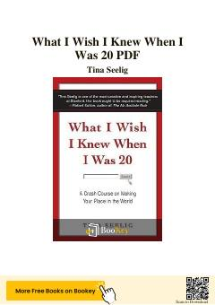

WIHayotdagi noaniqliklarni imkoniyatga aylantirish va muvaffaqiyatga erishish bo'yicha amaliy qo'llanma.
Tina Seelig Stanford universitetidagi tajribasiga asoslanib, yoshlarga hayotdagi noaniqliklarni imkoniyatga aylantirish va muvaffaqiyatga erishish yo'llarini o'rgatadi. Kitobda ijodkorlik, innovatsiya va qiyinchiliklarni yengib o'tish bo'yicha amaliy maslahatlar hamda ilhomlantiruvchi hikoyalar jamlangan.